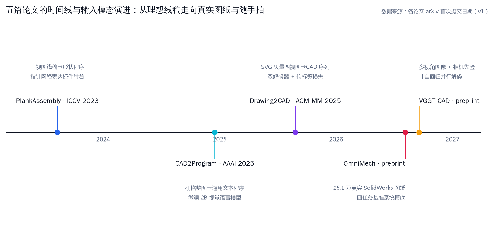
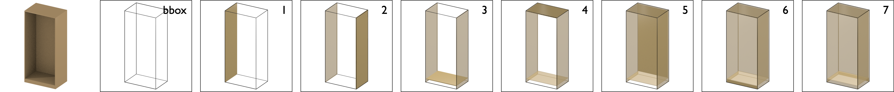
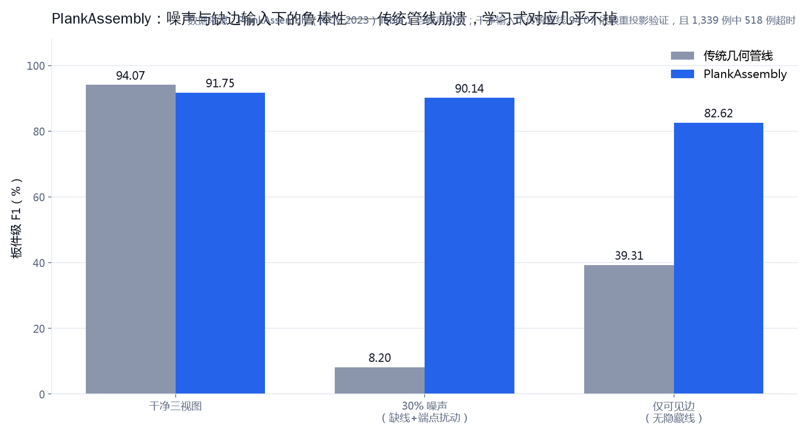
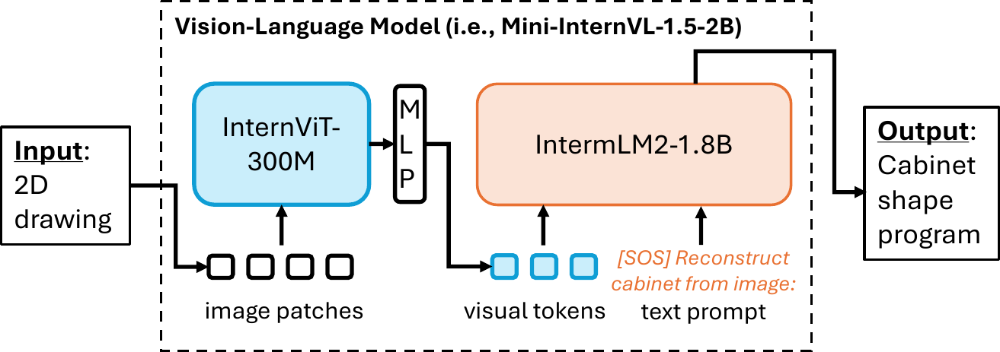
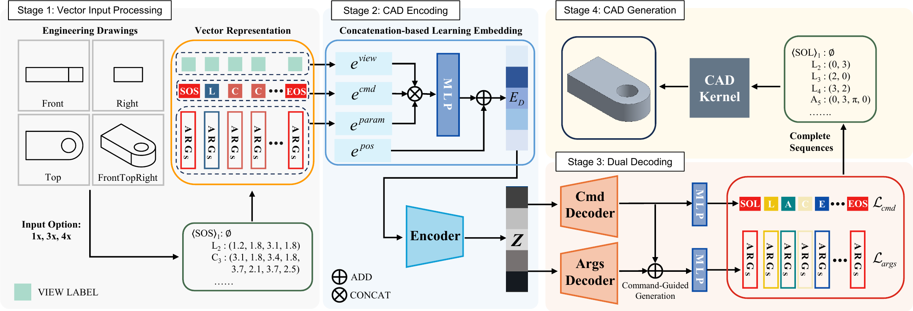
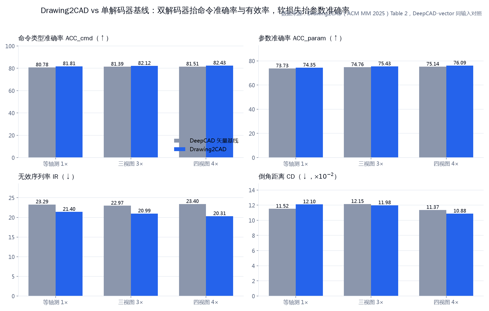
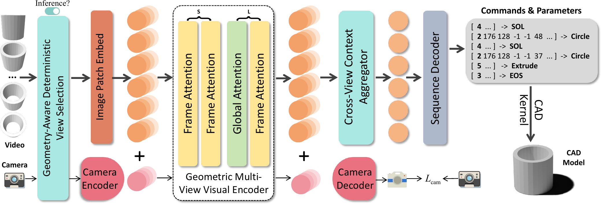
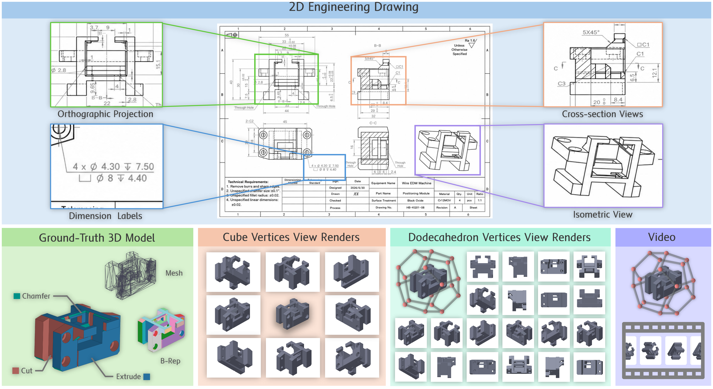
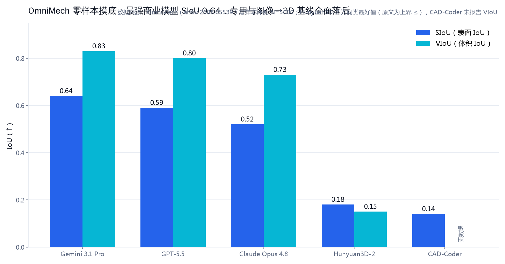
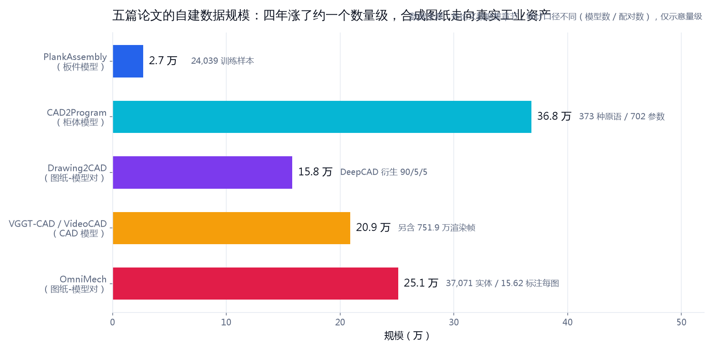

当 3D 生成研究还在吃点云、网格与文本时，工业界的起点始终是 2D 工程图。 本文精读五篇 arXiv 论文——PlankAssembly、CAD2Program、Drawing2CAD、OmniMech、VGGT-CAD， 看它们如何把"看图建模"变成"图生程序"：三视图线稿 → 栅格图纸 → 矢量四视图 → 随手拍视频 → 真实 SolidWorks 图纸。
动机：制造与建筑行业的真实设计流程以 2D 工程图为起点，而主流 3D 生成研究长期以点云、网格或文本为输入， 与工业流程明显脱节。2023 至 2026 年间，五篇论文沿着"2D 工程图/多视角图像 → 可执行参数化 CAD（Computer-Aided Design，计算机辅助设计）模型" 这条线持续推进，本文把它们放在一起精读。
五篇论文分布在 2023–2026 四年里，输入端一路"降门槛"。先看时间线，建立整体地图：

实验：三个可验证的数字亮点——PlankAssembly 在 30% 噪声（随机缺线 + 端点扰动）下板件 F1 仍达 90.14%， 传统几何管线同条件只有 8.20%；Drawing2CAD 的双解码器 + 软损失把无效序列率（IR，Invalidity Ratio）从 23.40% 压到 20.31%， 4 视图参数准确率提升到 76.09%；OmniMech 上最强商业模型的表面 IoU（SIoU）只有 0.64、体积误差普遍在 17% 以上， 专用程序合成基线的通过率仅 28.9%。
给定一份 2D 输入$D$——矢量线稿、栅格图纸或多视角图像集$\{I_i, P_i\}$（$P_i$为相机参数）—— 目标是生成参数化程序$G$，在 CAD 内核中执行得到实体$S(G)$。与普通 3D 重建不同，$G$必须满足两个额外约束： 可执行（能在 CAD 内核里跑出实体）与可编辑（改一个尺寸，全局联动更新）。
网格生成（如 PolyGen）输出三角面片：改不了尺寸、不携带设计意图、也无法直接进 CAD 工具链。 CAD 模型的本质是"草图 + 拉伸 + 布尔运算"的操作历史，参数化程序保留的正是这个历史。 五篇论文的输出表示各不相同——板件程序、文本程序、CAD 操作序列——但一言以蔽之：把几何写成程序。
解码范式上，前三篇论文都是自回归生成：
其中$g_t$是第$t$步输出的 token（一个坐标、一个命令或一段文本），$D$是编码后的输入。 自回归逐 token 生成的好处是序列长度自由、结构清晰；代价是误差累积与速度。 VGGT-CAD 改用可学习查询的非自回归解码，所有命令并行预测，换取速度与全局一致性——这是五篇论文里唯一的范式例外。
| 输入类型 | 代表论文 | 保真度与信息量 | 工程现实性 |
|---|---|---|---|
| 三视图矢量线稿 | PlankAssembly | 坐标精确，需隐藏线消除（HLR，Hidden Line Removal）合成 | 中：需图纸软件配合 |
| 栅格整图（含标注层） | CAD2Program | 丢失几何精度，保留全部标注信息 | 高：任何来源截图皆可 |
| SVG 矢量四视图 | Drawing2CAD | 网络友好量化，有公开数据链路（DeepCAD） | 中：依赖矢量导出 |
| 多视角图像 + 相机 | VGGT-CAD | 最接近"随手拍"，依赖相机先验 | 高：手机视频即可 |
| 真实 SolidWorks 图纸 | OmniMech | 尺寸/公差/符号最全，评测最难 | 最高：原生工业资产 |
ICCV 2023arXiv 2308.05744酷家乐柜体数据噪声鲁棒
动机：人工图纸充满噪声——缺线、端点抖动。传统"反投影 + 几何求解"管线依赖显式的输入-输出对应关系， 一碰噪声就崩；作者想用注意力隐式学习这种对应。 方法：Transformer 编码器-解码器 + 任务定制的"形状程序"（shape program）， 输出序列里每个参数既可以取量化坐标值，也可以通过指针指向另一块板的面，从而显式表达板件附着。
论文里"形状程序逐步搭出柜体"的过程一目了然：

每条 2D 边表示为$(x_1, y_1, x_2, y_2)$，端点按坐标排序、边按字典序排序后压成一维序列，坐标量化为 9-bit 整数。 每个 token 的嵌入由五项相加：
其中$E_{\text{value}}$编码量化数值本身，$E_{\text{view}}$区分前/顶/侧视图，$E_{\text{edge}}$与$E_{\text{coord}}$标记该值属于哪条边、哪个坐标位， $E_{\text{type}}$区分可见边与隐藏边（虚线）。也就是说，输入没有用任何 2D 卷积，完全靠"排序 + 类型嵌入"把平面图变成语言。
DSL（Domain-Specific Language，领域专用语言）只有一个原语：轴对齐长方体$\text{Cuboid}(x_{\min}, y_{\min}, z_{\min}, x_{\max}, y_{\max}, z_{\max})$，六个自由度。 关键设计在于：每个坐标要么是数值，要么是指针（指向另一块板的面），类似 C++ 的 union 类型。 整份程序构成一张有向无环图（DAG）：顶点是板件面，边是附着关系，拓扑排序后变成序列送入解码器。 解码时每个 token 有两个分布，用门控混合：
其中$p_{\text{vocab}}$是量化坐标词表上的分类分布，$p_{\text{attach}}$是对已生成 token 做点积注意力得到的指针分布（Pointer-Network 风格），$w_t$是标量门控。 也就是说：模型每写一个参数，都在"照抄词表"和"指向另一块板的边"之间二选一——板件之间的附着关系因此成为一阶公民，而不是事后用几何规则去猜。 推理时还会按几何合法性屏蔽无效指针位置（例如一块板的$x_{\min}$只能指向别的板的$x_{\max}$）。
数据来自酷家乐（Kujiale）平台上设计师制作的柜体模型，共 26,000+ 个板件模型，过滤后按 24,039/1,329/1,339 划分训练/验证/测试； 三视图用 pythonOCC 的 HLR 接口合成。噪声模拟两种：随机选边删除（缺线），或沿边方向扰动端点（端点不准），噪声比例 0–30%。 评测指标为板件级精确率/召回率/F1：预测板与真值板做匈牙利匹配，3D IoU > 0.5 记为命中。
| 输入条件 | 传统几何管线 | PlankAssembly |
|---|---|---|
| 干净三视图（传统管线含重投影验证） | 94.07* | 91.75 |
| 30% 噪声（缺线 + 端点扰动） | 8.20 | 90.14 |
| 仅可见边（无隐藏线） | 39.31 | 82.62 |

补齐实现参数：token 嵌入 512 维，编码器/解码器各 6 层、8 头注意力、FFN 1,024 维，坐标 9-bit 量化； 训练用 Adam（学习率 $10^{-4}$）跑满 40 万步，每卡 batch 16、共 4 张 RTX 3090；推理时除屏蔽非法附着外， 还会过滤体积为零的退化长方体。
两组表示消融支撑了设计选择。输入侧：把三视图栅格化后走 ResNet50-FPN + 3D CNN 特征体的图像方案，各噪声档 F1 全线更低—— 线稿栅格化后特征过稀；用启发式规则抽取侧脸多边形再回归包围盒的方案，干净输入相当、噪声敏感性明显更高， 再次印证"显式对应是脆弱的根源"。输出侧：与 PolyGen（逐顶点生成网格再拼实体）相比，六参数长方体的程序序列短得多—— 这正是 0.63 秒 vs 3.61 秒的来源；且 PolyGen 预测的非矩形面经常无法闭合成实体，整块板直接丢失。 失败模式则集中在两处：附着指针指错面、自回归过早吐出终止符。
AAAI 2025arXiv 2412.1189236.8 万柜体VLM 底座
动机：矢量输入限制太多——要恰好三张轴对齐视图、要矢量格式。作者反其道而行：不设计任何任务专用表示， 把图纸当普通图片，用视觉语言模型直接"看图写程序"。 方法：微调 Mini-InternVL-1.5-2B（InternViT-300M 视觉编码器 + MLP 投影层 + InternLM2-1.8B 语言模型）， 输入整张图纸栅格图，自回归生成 Python 风格文本程序。提示词只有一句："Reconstruct cabinet from image:"。整条链路一图看懂：

每个原语实例是三元组$Z_i = \{M_i, B_i, P_i\}$：模型 ID $M_i$（特殊 token，由模型名称与快照渲染图的 Chinese-CLIP 嵌入拼接构造）、 3D 包围盒$B_i$（中心$p_i \in \mathbb{R}^3$、尺寸$s_i \in \mathbb{R}^3$、绕竖轴旋转角$r_i \in \mathbb{R}$）、模型专属参数$P_i$。生成的程序长这样：
# 第一行：一个板件的空间位姿（中心×3、尺寸×3、转角×1）
bbox_0 = Bbox(507, 185, 805, 1014, 370, 50, 0)
# 第二行：该型号柜门的专属参数（开门方向、四面封边宽度等）
model_4 = <model_82289390>(openDirection=0, uCove=18, dCover=18, lCover=18, rCover=18)ID 用特殊 token 而不是字符串编号，是"视觉语言化"的关键一笔：检索哪一款模型，本质上变成了一个生成式分类问题。
数据来自群核科技（Manycore）线上平台：36.8 万个定制柜体模型及其真实生产图纸，373 种原语、702 个模型专属参数， 柜体尺寸 0.1–4.5 米、原语数不超过 48，按 36.4 万/2 千/2 千划分。标注直接取自设计师建好的参数化模型，无需额外人工。 整体成绩：模型检索准确率 93.80%、重建 F1 82.76%、模型专属参数准确率 97.21%。
最有信息量的一组消融是标注层（图纸上的尺寸、文字标注）：
| 输入层 | 模型检索 | 重建 F1 | 参数准确率 |
|---|---|---|---|
| 仅几何层 | 85.42 | 62.65 | 81.94 |
| 几何 + 标注层 | 93.80 | 82.76 | 97.21 |
两个值得展开的实现细节。其一，模型 ID 的特殊 token 不是随意散列：把原语名称文本与一张快照渲染图分别送入 Chinese-CLIP 的文本塔（RoBERTa-wwm-large）与视觉塔（ViT-H/14），两组嵌入拼接后映射进词表—— 生成 ID 时既"看"得到渲染证据，也"读"得到名称语义。其二，同数据的 QWen2-VL-2B 对照微调拿到 检索 93.98 / F1 84.90 / 参数 96.93，与 Mini-InternVL-1.5-2B 基本同档。也就是说：2B 规模已经够用， 瓶颈在标注质量，不在参数量。
ACM MM 2025arXiv 2508.1873315.8 万配对双解码器
动机：工业流程的起点本来就是矢量工程图，但"矢量图 → 参数化 CAD"在此之前没有学习式方法—— 此前 CAD 生成研究的输入全是点云、网格或文本。 方法：把 CAD 生成重构为序列到序列学习，三个组件各管一段：
SVG 简化为 LineTo + CubicBézier，每命令 8 参数、8-bit 量化（257 类）；命令带视图标签；嵌入用拼接 + MLP。
命令解码器预测 CAD 操作类型（Line/Circle/Arc/Extrude），参数解码器生成参数向量；命令隐状态直接注入参数支路。
参数预测不再硬 one-hot，而是把真值按量化邻域摊开成指数衰减分布，容差窗口$\pm 3$内非零。
三个组件串成的完整流水线如下——命令与参数分家，靠"命令引导"保持逐步对应：

矢量原语的形式化定义——每个命令 8 个参数：
即起点、终点与两个 Bézier 控制点；LineTo 的控制点槽位填$-1$。坐标归一化到$200 \times 200$视框、量化为 8-bit（257 类，含一个"未使用"槽位）， 每条命令附带视图标签$\{$Front, Top, Right, Isometric$\}$。嵌入融合用拼接 + MLP，而非以往工作的线性相加—— 这个看似小的改动在消融里贡献了可观的增益。
软目标分布损失：参数预测的交叉熵目标是按量化邻域摊开的分布，而不是硬 one-hot：
其中$y$为真值量化级，$\tilde{y}_k$是以$y$为中心、按$e^{-\alpha|k-y|}$衰减的软目标分布（只容许容差窗口$[\pm\tau]$内非零）， 实际取$\alpha = 2.0$、$\tau = 3$，窗口外为 0。 直觉：CAD 参数差 1–3 个量化级往往不改变设计意图，硬 one-hot 把模型逼得太紧，反而学不出"差不多对"的容错能力。
数据集 CAD-VGDrawing 从公开 CAD 操作序列数据集 DeepCAD 的 17.6 万模型出发，用 FreeCAD TechDraw 脚本合成四视图 SVG， 过滤无效样本后得到 157,591 对，按 90/5/5 划分；矢量格式之外还同步导出了 15 万张栅格图。推理循环如下：
# 双解码器 + 命令引导的参数生成（伪代码）
z = encoder(flatten(views)) # 4 层 Transformer, 输出取平均
for t in range(max_len): # 自回归, 每步两条支路
cmd_logits = cmd_decoder(z, history) # 命令类型: Line/Circle/Arc/Extrude
guide = cmd_decoder.last_hidden # 命令信息注入参数支路
arg_logits = arg_decoder(z, history, guide) # 257 类 × 8 参数位
cmd, args = sample(cmd_logits), greedy(arg_logits) # 参数容差 η=3
history.append(pack(cmd, args))
if cmd == EOS: break
solid = pythonocc_execute(history) # OpenCASCADE 内核执行成实体基线是把同样的输入喂给 DeepCAD 式单解码器。指标：ACC_cmd（命令类型准确率）、ACC_param（参数准确率，容差$\eta = 3$）、 IR（无法执行出合法 3D 形状的序列比例）、CD（倒角距离，2,000 采样点，$\times 10^{-2}$）。
| 输入视图 | 方法 | ACC_cmd↑ | ACC_param↑ | IR↓ | CD↓ |
|---|---|---|---|---|---|
| 等轴测 1× | 基线 | 80.78 | 73.73 | 23.29 | 11.52 |
| 等轴测 1× | Drawing2CAD | 81.81 | 74.35 | 21.40 | 12.10 |
| 正交三视图 3× | 基线 | 81.39 | 74.76 | 22.97 | 12.15 |
| 正交三视图 3× | Drawing2CAD | 82.12 | 75.43 | 20.99 | 11.98 |
| 四视图 4× | 基线 | 81.51 | 75.14 | 23.40 | 11.37 |
| 四视图 4× | Drawing2CAD | 82.43 | 76.09 | 20.31 | 10.88 |

消融的分工很清楚：双解码器 + 基线损失主要抬 ACC_cmd 与 IR；再叠软损失，ACC_param 明显上涨（4 视图下 75.14 → 76.09）； 最后把嵌入融合从线性相加换成拼接 + MLP，各指标再涨一截。唯一的小代价是等轴测输入下 CD 略逊于基线（12.10 vs 11.52）—— 命令对了对得更齐，但形状精度受制于容差训练。
还有一组值得注意的对照：同一模型分别吃矢量图与栅格图—— 矢量输入的几何精度优势是实实在在的，这也解释了为什么 Drawing2CAD 要专门为矢量设计表示。
| 输入格式（同一模型，四视图） | ACC_cmd↑ | ACC_param↑ | IR↓ | CD↓ |
|---|---|---|---|---|
| 栅格图（DeepCAD-raster） | 77.69 | 70.49 | 29.79 | 18.16 |
| 矢量图（DeepCAD-vector） | 81.51 | 75.14 | 23.40 | 11.37 |
训练配置补齐：单卡 RTX 4090，batch 256，训满 200 个 epoch，Adam 学习率 $10^{-3}$、2,000 步 warm-up、 dropout 0.1、梯度裁剪 1.0。预处理里还有个容易被忽略的工程点：SVG 路径先做图论轮廓提取并重排序 （左上角为原点、轮廓按距离排序、顺时针绘制），让同一形状在不同图纸里得到尽量一致的序列—— 序列模型对"绘图顺序"敏感，这一步直接决定学习难度。
preprint 2026arXiv 2609.21225752 万帧非自回归
动机：前三篇依赖理想图纸；真实场景里用户往往只有几张照片或一段随手拍视频，而且此前的图像输入方法缺少强多视角几何先验。 方法：把 VGGT（Visual Geometry Grounded Transformer，视觉几何基础模型）的预训练先验迁移到 CAD 重建： 相机内外参编码为条件 token 与图像 token 联合建模、变视角跨视角上下文聚合、免训练的几何感知选帧、非自回归序列解码。
每帧的内外参经位姿编码、MLP、Transformer 主干得到相机 token：
相机 token 前置到该视图的 image token 序列，依靠 VGGT 的跨视角注意力传播视角信息。 同时设一个辅助解码器从相机特征回归平移$t_i \in \mathbb{R}^3$、旋转四元数$q_i \in \mathbb{R}^4$与视场角（FOV，Field of View），构成几何自监督。 四元数损失用 min 处理双覆盖：
因为$q$与$-q$表示同一个旋转，直接算 L1 会惩罚到等价解。总损失为
其中命令类型与参数都是交叉熵（无效参数槽位用 Validity Mask 屏蔽），$\mathcal{L}_{\text{cam}}$为平移/四元数/焦距三项 L1 之和； 焦距由 FOV 换算而来（$\hat{f}_x = W / (2\tan(\mathrm{FOV}_w/2))$），让几何监督落在真实成像参数上，而不是一个自由浮动的回归头。
视角数$N \in [2, 8]$可变：各视图经共享权重卷积 + 自适应池化得到向量$v_i$，MLP 产出注意力权重$\alpha_i$， 融合特征$f_{\text{fused}} = \sum_i \alpha_i v_i$。推理时的几何感知确定性（GAD）选帧是免训练的贪心子集选择：
$C$为覆盖度（光轴夹角、相机基线、方位角），$Q$为图像质量（拉普拉斯方差清晰度、亮度熵、前景占比）， $R$为与已选集合的姿态相似冗余惩罚，最优权重$(\lambda_c, \lambda_q, \lambda_r) = (0.50, 0.35, 0.15)$。
def gad_select(frames, k):
# 免训练的推理期选帧：贪心最大化 Δ(i|S)
S = []
while len(S) < k:
i = argmax(lambda_c * coverage(i, S) # 覆盖: 光轴角/基线/方位
+ lambda_q * quality(i) # 质量: 清晰度/亮度熵/前景占比
- lambda_r * redundancy(i, S)) # 冗余: 与已选视角的姿态相似度
S.append(i)
return S # (λc, λq, λr) = (0.50, 0.35, 0.15)最终的非自回归解码器用$N_c$个可学习查询$E \in \mathbb{R}^{N_c \times d_E}$对全局潜变量做交叉注意力， 两个并行头分别预测命令类型与 16 维参数向量（每参数 256 级量化，无效槽位填$-1$）——所有命令一次并行产出，不再逐 token 排队。
基准基于 ABC-mono 语料：20.9 万 CAD 模型，每模型 36 个随机朝向、连续变化的视角渲染，共 7,518,708 帧； 帧按时间排序以模拟"随手拍视频"，支持单视角到$2 \sim 8$视角评测。数据按 90/5/5 划分。
| 方法 | 输入 | ACC_cmd↑ | ACC_param↑ | CD↓ | IR↓ |
|---|---|---|---|---|---|
| DeepCAD* | 单视图 | 0.6511 | 0.6116 | 0.3513 | 0.3427 |
| VGGT-CAD | 单视图 | 0.7854 | 0.6714 | 0.1482 | 0.3535 |
| DeepCAD-Mv | 多视图 | 0.7509 | 0.6352 | 0.2123 | 0.3826 |
| VGGT-CAD | 多视图 | 0.8213 | 0.7104 | 0.0670 | 0.3020 |

作为参照，把图纸当普通图片的网格重建基线只能比 CD：TripoSR 0.7207、Hunyuan3D 0.4126、One-2-3-45 0.1736； VGGT-CAD 单视角 0.1482、多视角 0.0670——形状精度的差距是结构性的。
训练配置：VGGT 主干用 LoRA（$r=32$）微调，仅更新 12.52M / 142.7M 的参数；相机编码器-解码器、跨视角聚合器与 序列解码器从零训练；4 张 A800 80G，输入 512×512，Adam 学习率 $10^{-3}$、batch 4。 两个非自回归并行头的输出互不排队——这也解释了它相对逐 token 生成在推理侧的结构性优势。
视角数从 1 加到 8，ACC_cmd 从 0.7854 涨到 0.8213、CD 从 0.1482 降到 0.0670，增益到 6 视角后进入平台期。
Benchmark 2026arXiv 2608.0553925.1 万对暴露差距
动机：此前的数据集多为合成图纸、标注稀疏；真实工业图纸带着完整的尺寸标注、几何符号、特征说明与公差约束， 但从未有人用它系统评测过"模型能不能真的把图纸读明白"。 方法：从 GrabCAD、3D ContentCentral、TraceParts 与 GitHub 收集真实可编辑 SolidWorks 工程 （原生 .SLDPRT 零件 + .SLDDRW 图纸），经 SolidWorks API 导出 STEP B-rep（Boundary Representation，边界表示）、OBJ 网格、 28 个渲染视角（20 个来自十二面体顶点、8 个来自立方体顶点）与漫游视频。 共 25.1 万对图纸-模型，约 3.7 万个实体、平均每图 15.62 个尺寸标注，覆盖机器人、汽车、航空、医疗、农机、无人机等领域。 实验：9 个前沿大模型 + 5 个专用/3D 基线，零样本评测$N = 5000$。
基准里"真实图纸"长什么样、数据管线如何铺开，论文总览图最直观：

| 四个任务 | 考什么 | 核心指标 |
|---|---|---|
| ① 图纸 → 参数化 CAD 程序 | 程序合法性与可执行性 | 语法/执行通过率、程序长度、操作多样性 |
| ② 图 → 3D 推理 | 多视角证据下的几何重建 | CD、表面/体积 IoU（SIoU/VIoU）、F-score、面积/体积误差 |
| ③ 标注接地推理 | 尺寸/符号/公差作为约束执行 | 误差相对标注的偏离 |
| ④ 工具增强 agentic 重建 | 多轮调用可视化/测量/CAD 执行/验证工具 | 通过率、步数、token 效率、自停率 |
零样本结果（2D 图纸输入）中最有代表性的几行：
| 模型 | CD↓ | SIoU↑ | VIoU↑ | 通过率↑ | 体积误差↓ |
|---|---|---|---|---|---|
| Gemini 3.1 Pro | 3.46 | 0.64 | 0.83 | 81.1% | 23.7% |
| GPT-5.5 | 3.34 | 0.59 | 0.80 | 92.6% | 41.6% |
| Claude Opus 4.8 | 4.18 | 0.52 | 0.73 | 92.7% | — |
| Hunyuan3D-2 等图像→3D 模型 | — | ≤ 0.18 | ≤ 0.15 | — | 最高 5,515% |
| CAD-Coder（专用程序合成） | 16.3 | 0.14 | — | 28.9% | — |

把口径补全。程序合法性维度看四件事：语法有效性、可执行性、程序长度与 CAD 操作多样性——能跑通只是及格线。 Agentic 协议提供两档视觉反馈：模型自控相机参数的"自适应视角选择"，或按需调取的"固定 8 视角渲染"； 多轮迭代的终点是重建合法或触达步数上限。Agentic 模式下 GPT-5.5 进一步拿到 CD 2.92、SIoU 0.63、VIoU 0.82、 体积误差 15.91%、通过率 92.37%；Claude Opus 4.8 固定 8 视角通过率 96.93%；而 Gemini 3.5 Flash 自适应档 CD 2.70 但通过率只有 71.71%——跑得通和画得准，是两个独立的难点。 数据侧的分量：37,071 个实体、204.8 万面、347.6 万顶点，单件体积从 1,237 到 2,145,030 mm³，尺度跨三个数量级。
| 论文（发表处） | 输入 | 输出表示 | 解码方式 | 数据规模 | 一句话贡献 |
|---|---|---|---|---|---|
| PlankAssembly（ICCV 2023） | 三视图矢量线稿 | 板件程序 + 附着指针 | 自回归 + 指针网络 | 2.7 万柜体 | 噪声鲁棒的图生程序开山 |
| CAD2Program（AAAI 2025） | 栅格整图含标注 | 通用文本程序 | VLM 自回归 | 36.8 万柜体 | 证明 VLM 是可行底座 |
| Drawing2CAD（ACM MM 2025） | SVG 矢量四视图 | CAD 操作序列 | 双解码器自回归 | 15.8 万对 | 解耦解码 + 软标签损失 |
| OmniMech（preprint 2026） | 真实 SolidWorks 图纸 | ——（基准） | —— | 25.1 万对 | 四任务摸底，揭示精度差距 |
| VGGT-CAD（preprint 2026） | 多视角图像 + 相机 | CAD 操作序列 | 非自回归并行 | 20.9 万模型 / 752 万帧 | 预训练 3D 先验迁移 |
还有一条主线藏在数据里：五年间自建配对数据的规模涨了约一个数量级，来源从平台合成走向真实工业资产——

有矢量图纸走 Drawing2CAD 路线，精度最高；有栅格图、想复用 VLM 生态走 CAD2Program；只有照片或视频走 VGGT-CAD；要选型或评测自己的模型，用 OmniMech。
尺寸精度与标注约束的可执行性。OmniMech 的数字说明，"看个大概"已经解决，"毫米级正确"远未解决——而后者才是工程图存在的意义。
四年间，"图生程序"从专用小模型 + 自造 DSL，走到了基础模型先验 + 通用序列 + 百万级基准；下一步比的不是谁更像，而是谁更准。
—— 本文小结